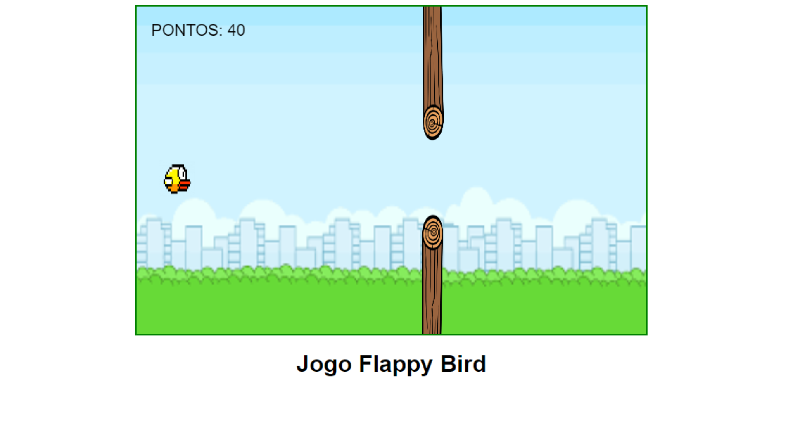
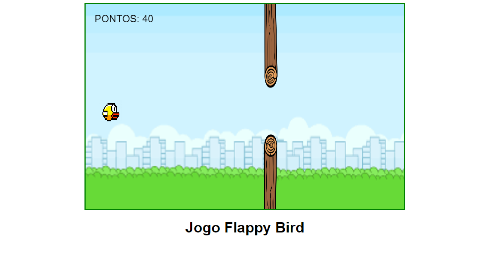

Sobre a matéria de A.P.S.
Essa matéria tem como objetivo ensinar sobre as metodologias e técnicas para o desenvolvimento de softwares. Tem como principal conteúdo requisitos e funcionalidades de sistemas, modelagem de sistemas (utilizando diagramas) e design de sistemas para a criação de sistemas robustos e escaláveis.
 
